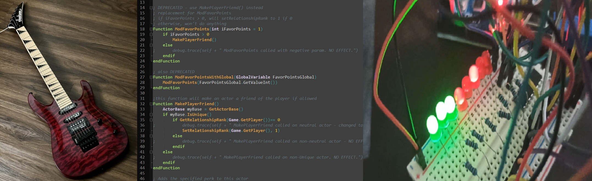

Моите хобија
Имам многу хобија, но некои се издвојуваат како хобија што многу повеќе ги сакам.
Свирам класична гитара 4 години, електрична гитара 3 години и ја обожавам комплетната слобода што ја имам кога можам било која песна да најдам што ми се допаѓа и доколку сакам, да ја свирам по мој стил и со мој инструмент.
Секако, играм видео игри. Од кога бев дете, секогаш сум бил возбуден од интерактивноста што ја имале видео игрите, нешто што не беше можно со телевизор или радио. Особено уживам во игри кадешто можеш да создадеш своја сопствена приказна и толкувања за тоа што се случува во светот (RPG). Мојата омилена игра е Skyrim, којашто ја играм веќе 12 години, а програмирам модифиакции за неа 4 години користејќи го Papyrus.
Од љубовта што ја имам кон видео игри, исто така добив љубов кон електрониката, посебно компјутерите. Имав огромна фасцинација со како тоа било можно милиони, билиони транзистори да стават во еден чип. Од таму ја добив мотавацијата да се запишам во “СЕТУГС“ Михајло Пупин, па евентуално на ФИНКИ.